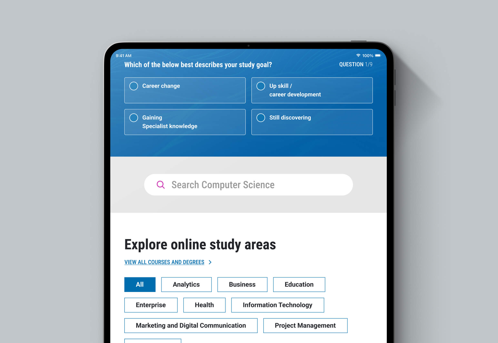
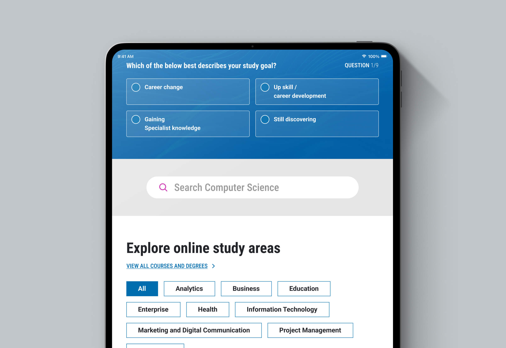

03 monash university online


2023
Lead Designer
Monash University needed a new design for its online platform that maintained consistency with its updated brand identity. The existing Monash Online website had inconsistencies in branding, disorganised page layouts, and user-reported confusion. Additionally, there was a request to introduce a “compare courses” feature to enhance the user experience.
The revamped Monash Online platform now features a visually consistent and standardised design, resulting in a significant increase in student registrations and expressions of interest in online education. From a business perspective, the improved page designs led to a notable increase in conversion rates, particularly validated through positive user testing feedback.
 

Review Branding and UI Library
Before any redesign begins, it’s vital to thoroughly review the updated brand guidelines and any existing UI library or design system components. This ensures alignment from the outset and prevents inconsistencies down the line. Evaluate how the new visual identity—typography, colours, iconography, tone of voice—should influence the website’s look and feel. Additionally, assess the flexibility and completeness of the current UI library. Are components adaptable to the new branding? Are there gaps that need to be addressed? This review sets the tone for visual and interaction design, ensuring that brand expression and usability are tightly integrated.
Information Architecture & Content Strategy
With branding clarified, shift focus to how the site is structured and how content supports both user needs and business goals. Start by auditing existing pages and messaging to determine what’s outdated, redundant, or misaligned with the new brand. Redefine user journeys based on behavioural insights to streamline navigation and improve content accessibility. Develop a revised sitemap and low-fidelity wireframes to visualise layout hierarchy, calls to action, and key information flows. This phase ensures that users can intuitively move through the site while consistently encountering brand-aligned, purposeful content.


UI Design & Prototyping
Now the creative translation of the brand begins. Based on your earlier review, refine or expand the design system to incorporate updated visual styles—this includes adjusting patterns, layouts, and interactive elements to reflect the brand while maintaining usability standards. High-fidelity mockups are created to express the new visual direction, tested across screen sizes for responsiveness. These mockups are then turned into interactive prototypes to simulate key user flows. This helps communicate functionality and visual intent, allowing for early feedback before development begins.
Validation & Iteration
With a functional prototype in place, it’s time to validate the experience with real users and stakeholders. Conduct usability testing to uncover friction points and verify whether users can navigate key tasks without confusion. Collect both qualitative and quantitative feedback, then refine the design accordingly. This iterative loop may involve multiple rounds of testing and adjustment to ensure the final solution is intuitive, on-brand, and ready for implementation. Validation grounds the redesign in evidence, helping you launch with confidence.


UX/UI DESIGNER
Harry is a UX/UI designer who crafts intuitive, high-performance websites that align with business goals. With expertise in UX research, wireframing, prototyping, and UI design, he creates seamless, user-focused experiences.
His superpower is the ability to deeply understand business needs and translate them into effective design solutions, supported by a structured workflow. He is business-driven, with a strong focus on critical reviews, iteration, and design systems to ensure the delivery of high-quality design outcomes.